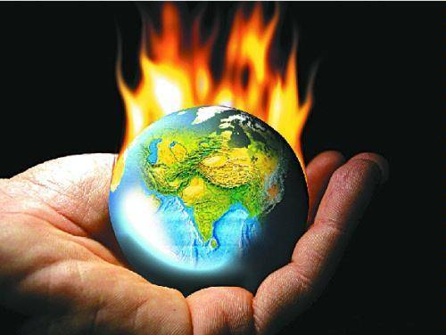

Weather and Climate App
ကမၻာႀကီးပူေႏြးလာမႈ

ကမၻာႀကီးပူေႏြးလာမႈဆိုသည္မွာကမၻာ့ေျမမ်က္ႏွာျပင္ႏွင့္ေလထုအတြင္းတြင္ အပူခ်ိန္တေျဖးေျဖးျမင့္တက္လာျခင္းေၾကာင့္ကမၻာႀကီးတစ္ခုလုံးအပူခ်ိန္ျမင့္တက္လာျခင္းကိုဆိုလို ပါသည္။ ေနမွျဖာထြက္ေသာေရာင္ျခည္မ်ားသည္ကမၻာေျမမ်က္ႏွာျပင္ ေပၚသို႔က်ေရာက္ၿပီးသည့္အခါအခ်ိဳ႕ကိုကမၻာေျမျပင္ကစုပ္ယူထားၿပီးအခ်ိဳ႕ သည္အပူလႈိင္း သို႔မဟုတ္အနီေအာက္ေရာင္ျခည္(infrared radiation)အျဖစ္ေျပာင္းလဲသြား ပါသည္။ယင္းအပူလႈိင္းမ်ားကိုေလထုအတြင္းရွိကာဗြန္ဒိုင္ေအာက္ဆိုဒ္(CO2)၊မီသိန္း(CH4)၊ ႏိႈက္ထရပ္ေအာက္ဆိုဒ္(N2O)စသည့္ဓါတ္ေငြ႕မ်ားကစုပ္ယူထားျခင္းျဖင့္လူ၊တိရိစၧာန္ႏွင့္သစ္ပင္ တို႔ရွင္သန္ေနထိုင္ႏိုင္ရန္သင့္တင့္မၽွတေသာအပူဓါတ္ကိုရရွိေစပါသည္။အဆိုပါဓါတ္ေငြ႕မ်ားသည္ ကမၻာႀကီးကိုပူေႏြးေစၿပီးမွန္လုံအိမ္ကဲ့သို႔စြမ္းေဆာင္ေပးႏိုင္သျဖင့္မွန္လုံအိမ္ဓါတ္ေငြ႕မ်ား ဟုတင္စားထားၾကပါသည္။ သို႔ရာတြင္စက္မႈေခတ္ထြန္းကားလာသည့္အခ်ိန္မွစတင္၍စက္႐ုံအလုပ္႐ုံမ်ား၊စက္တပ္ယာဥ္မ်ား တိုးပြားလာျခင္းေၾကာင့္ေက်ာက္မီးေသြး၊ဓါတ္ဆီ၊ဒီဇယ္၊သဘာဝဓါတ္ေငြ႕စသည့္႐ုပ္ႂကြင္းေလာင္စာ မ်ားသုံးစြဲမႈတစ္ႏွစ္ထက္တစ္ႏွစ္တိုးတက္မ်ားျပားလာခဲ့ရာမွေလထုအတြင္း CO2 အပါအဝင္မွန္လုံ အိမ္ဓါတ္ေငြ႕မ်ားအဆမတန္မ်ားျပားလာခဲ့ပါသည္။ဤနည္းအားျဖင့္ေလထု၏အပူရွိန္ကိုစုပ္ယူ၍ ေျမျပင္သို႔ျပန္လည္ထုတ္လႊင့္ႏိုင္မႈႀကီးမားလာၿပီးကမၻာႀကီး၏အပူခ်ိန္ကိုျမင့္တက္လာေစရာယခုအခါ ကမၻာႀကီး၏အပူခ်ိန္သည္လြန္ခဲ့ေသာႏွစ္ေပါင္း(၁၄၀)ကထက္(၁)ဒီဂရီဖာရင္ဟိုက္(၀.၅ ဒီဂရီစင္တီ ဂရိတ္)ပိုမိုပူေႏြးလာသည္ဟုဆိုပါသည္။ ရာသီဥတုေျပာင္းလဲေဖာက္ျပန္မႈမ်ားသည္ကမၻာႀကီးပူေႏြးလာမႈေၾကာင့္ျဖစ္ၿပီးကမၻာႀကီးပူေႏြးလာျခင္း သည္လည္းမွန္လုံအိမ္ဓါတ္ေငြ႕မ်ားထုတ္လႊတ္မႈမ်ားျပားလာျခင္းေၾကာင့္ျဖစ္ပါသည္။ရာသီဥတု ေျပာင္းလဲမႈသည္ယေန႔လူသားမ်ားရင္ဆိုင္ေနရေသာစိမ္ေခၚမႈႀကီးတစ္ရပ္ျဖစ္ပါသည္။IPCC ၏စတုတၳအႀကိမ္ေျမာက္ဆန္းစစ္ေတြ႕ရွိခ်က္ အစီရင္ခံစာတြင္ရာသီဥတုေျပာင္းလဲမႈသည္စီးပြားေရးတိုးတက္မႈ၊ေရရွည္တည္တန္႔ေသာျပည့္စုံမႈႏွင့္ တစ္ကြအႏၲရာယ္နားနီးသူမ်ား၏ဘဝရွင္သန္မႈစသည္တို႔ကိုၿခိမ္းေျခာက္လ်က္ရွိေၾကာင္းသိပၸံနည္းက် ေတြ႕ရွိခ်က္ကိုေဖာ္ျပထားပါသည္။ထို႔အျပင္အကယ္၍မွန္လုံအိမ္ဓါတ္ေငြ႕ထုတ္လႊင့္မႈသည္လက္ရွိႏႈန္း ထားအတိုင္းဆက္လက္ျမင့္တက္ေနၿပီးစက္မႈမထြန္းကားခင္အခ်ိန္တြင္ရွိႏႈန္းထား၏ႏွစ္ဆျမင့္တက္ လာခြင့္ျပဳမည္ဆိုပါကကမၻာႀကီးသည္ဤရာစုႏွစ္အတြင္းပ်မ္းမၽွအပူခ်ိန္၃ဒီဂရီစင္တီိဂရိတ္မၽွျမင့္တက္ လာမႈကိုႀကဳံေတြ႕ရပါမည္။ပင္လယ္ေရမ်က္ႏွာျပင္ျမင့္တက္လာမႈ၊စိုက္ပ်ိဳးရာသီေျပာင္းလဲလာမႈ၊အစြန္း ေရာက္ရာသီဥတုျဖစ္စဥ္မ်ားျဖစ္ေသာမုန္တိုင္းျဖစ္ေပၚမႈ၊ေရႀကီးမႈႏွင့္မိုးေခါင္မႈစသည္တို႔၏ႀကိမ္ႏႈန္း ႏွင့္ျပင္းအားတိုးလာမႈစသည့္ဆိုး႐ြားေသာအက်ိဳးဆက္မ်ား ျဖစ္လာပါမည္။သို႔ျဖစ္ရာအႏၲရာယ္ရွိေသာ မွန္လုံအိမ္ဓာတ္ေငြ႕ေလထုထဲတြင္ပါဝင္မႈတည္ၿငိမ္ေစေရးသည္လူသားအားလုံး၏တာဝန္တစ္ရပ္ ျဖစ္လာပါသည္။
ဆက္သြားရန္
ေရွ့သို႔